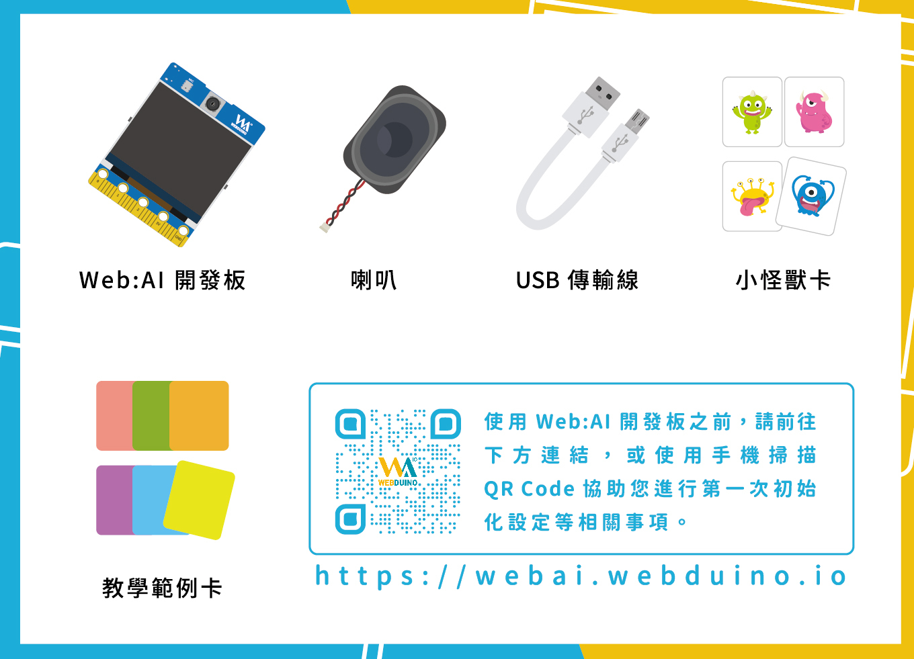

Web:AI 介紹
Web:AI 使用 AI 晶片 ( K210 ) 以及 Wi-Fi 晶片 ( ESP8285 )，能夠做出人臉追蹤、影像分類、物件追蹤、語音辨識、QRcode 掃描等應用，讓教師與學生只需要一塊板子就能夠讓 AI 人工智慧融入生活。
不論是連上網路或是離線，只要透過 Webduino 教育平台，就能夠用最簡單的方式上手 AIoT。
產品內容
除了 Web:AI 開發板外，也包含了喇叭和 USB 線，讓開發板能夠立即使用並播放音效；另外更附贈了教學範例卡，只要簡單掃描 QRcode，就能馬上使用內建的程式範例，搭配小怪獸卡做出各種不同的互動效果。
- Web:AI 開發板
- USB 線
- 喇叭
- 教學範例卡 ( 部分範例需搭配喇叭及登月小車 )
- 小怪獸卡

Web:AI 開發板
硬體規格
Web:AI 開發板硬體內含攝像鏡頭及 LCD 螢幕，可即時做出影像互動；內建的麥克風和喇叭插座能夠做出錄音、播放等語音互動；和 Web:Bit 相容的金手指腳位可以直接接上 Web:Bit 擴充板，串接各類的感測器、控制器，完美達成 AI 與 IoT 的結合。
- 尺寸：51.6 x 67mm
- LCD 螢幕：8bit MCU 2.3"，解析度 320x240
- 電源輸入:
- Micro USB ( 5VDC / 2A )
- 鋰電池插座 ( 3.7~4.2V )
- CPU：雙核 64bit RISC-V，內建浮點運算器、神經網路處理器，標準頻率 400MHz
- 鏡頭：500 萬畫素
- 插座：金手指相容 ( Web:Bit / micro:bit )、TF card、揚聲器、鋰電池
- 按鈕：L 按鈕、R 按鈕、Reset 按鈕
- 無線網路：內建 ESP8285 模組，支援 2.4G 802.11.b/g/n
- 音頻支援：內建 MEMS 麥克風，支援 3W 揚聲器輸出

腳位定義
有關 Web:AI 的腳位和使用的晶片如下：

主晶片 ( K210 ) & Wi-Fi 晶片 ( ESP8285 )

開發板燈號

- 藍燈閃爍：充電中，不論是接電池或是電源都會閃爍。
- 黃燈：電源開時燈亮；電源關時燈滅。
- 紅燈：電池缺電。
- 綠燈：電池充飽或是沒接上電池。
Webduino 教育平台
Web:AI 的開發和程式的使用可以透過程式積木平台以及 IDE，程式積木平台可以讓人從最簡單的方式入門程式邏輯；而 IDE 則是能夠讓有程式基礎的人快速編輯自己的程式並部署到開發板上。
操作環境
首先進入 Webduino 教育平台。

Web:AI 程式積木
選擇「Web:AI 程式積木」，進入程式積木平台。
- 連結：程式積木平台。
Webduino 影像訓練平台
選擇「Webduino 影像訓練平台」，進入影像訓練平台。
- 關於影像訓練平台的使用，歡迎參考：影像分類。
MaixPy IDE 下載
選擇「MaixPy IDE 下載」，下載 IDE。
- 關於 IDE 的開發使用，歡迎參考：使用 IDE 開發 Web:AI。